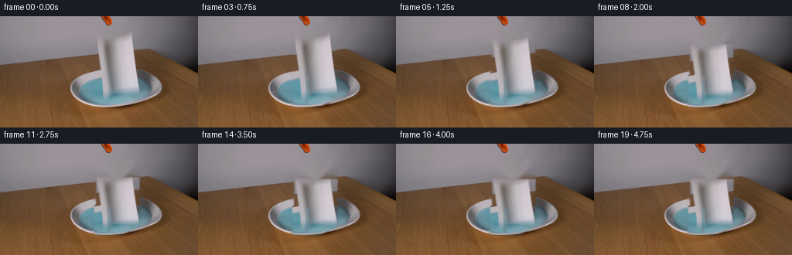
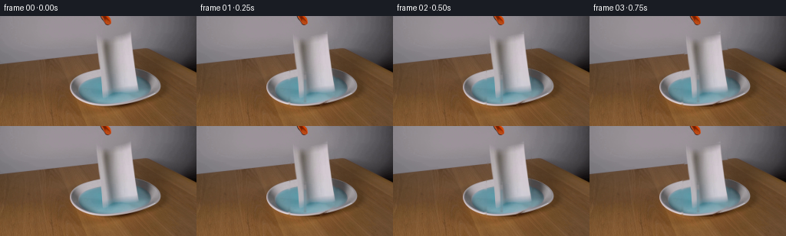
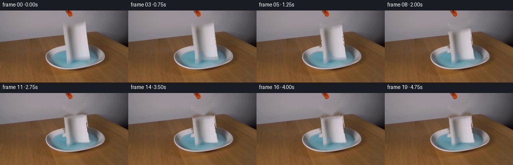
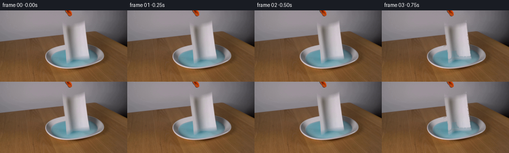

CODING AGENTS AS PIXEL WORLD MODELS
traex/DeepSeek-V4.1-Flash · 0127
点击播放 · 原生 RGB 像素
逐轮保存的候选
回放视频、检查图与代码变化。
每份候选均可单独播放。实际图片检查记录在下方工具轨迹中。
候选 01播放与检查图
点击播放 · 原生 RGB 像素

展开代码变化
--- 上一保存版本
+++ 本次保存版本
@@ -0,0 +1,230 @@
+from pathlib import Path
+
+import cv2
+import numpy as np
+from PIL import Image
+
+import artifact_io
+
+
+ROOT = Path(__file__).resolve().parent
+N_FRAMES = 20
+FPS = 4.0
+
+
+def smoothstep(value):
+ value = np.clip(value, 0.0, 1.0)
+ return value * value * (3.0 - 2.0 * value)
+
+
+def paper_mask(rgb):
+ """Build a soft matte for the paper towel while preserving the dish."""
+ height, width = rgb.shape[:2]
+ mask = np.zeros((height, width), np.uint8)
+
+ # The upper towel hangs from the gripper. Its lower end is split into
+ # two broad folds that drape over the two visible lobes of liquid.
+ polygons = [
+ [(124, 23), (179, 23), (179, 72), (124, 72)],
+ [(124, 68), (139, 70), (139, 117), (116, 117), (108, 111),
+ (100, 104), (94, 97), (92, 89), (98, 81)],
+ [(143, 68), (179, 70), (180, 88), (180, 100), (176, 106),
+ (167, 111), (158, 116), (143, 117)],
+ [(116, 113), (160, 113), (160, 118), (116, 118)],
+ ]
+ for polygon in polygons:
+ cv2.fillPoly(mask, [np.asarray(polygon, np.int32)], 255)
+
+ # Remove a little of the dark wall immediately left of the hanging sheet.
+ # The paper's own gray fold remains inside the matte.
+ y, x = np.indices((height, width))
+ left_edge = 124 + np.clip((24 - y) * 0.18, -2, 2)
+ mask[(x < left_edge) | (x > 180)] = 0
+
+ # Keep the orange tool body above the towel out of the matte.
+ mask[:23] = 0
+
+ # One-pixel feathering prevents a hard cut when the sheet moves.
+ alpha = cv2.GaussianBlur(mask.astype(np.float32) / 255.0, (3, 3), 0.65)
+ return alpha
+
+
+def clean_plate(rgb, alpha):
+ """Reconstruct the wall, table, and dish hidden by the towel."""
+ hard = (alpha > 0.28).astype(np.uint8) * 255
+ hard = cv2.dilate(hard, np.ones((3, 3), np.uint8), iterations=1)
+ plate = cv2.inpaint(rgb, hard, 5, cv2.INPAINT_TELEA)
+
+ # Inpainting a large, curved dish can flatten its shading. Blend back the
+ # nearby photographed colors along horizontal scan lines in the dish area.
+ y, x = np.indices(rgb.shape[:2])
+ dish = (y >= 77) & (y <= 118) & (x >= 88) & (x <= 202)
+ for row in range(77, 119):
+ xs = np.flatnonzero(hard[row] > 0)
+ if not len(xs):
+ continue
+ lo = max(0, int(xs.min()) - 2)
+ hi = min(rgb.shape[1] - 1, int(xs.max()) + 2)
+ left = plate[row, max(0, lo - 5):lo]
+ right = plate[row, hi + 1:min(rgb.shape[1], hi + 6)]
+ if len(left) == 0 or len(right) == 0:
+ continue
+ span = max(1, hi - lo)
+ for col in range(lo, hi + 1):
+ t = (col - lo) / span
+ fill = left.mean(axis=0) * (1.0 - t) + right.mean(axis=0) * t
+ plate[row, col] = 0.55 * plate[row, col] + 0.45 * fill
+
+ # Preserve the photographed plate outside the towel matte exactly.
+ keep = (alpha < 0.04) & ~dish
+ plate[keep] = rgb[keep]
+ return np.clip(plate, 0, 255).astype(np.uint8)
+
+
+def release_amount(frame):
+ """Accelerating release followed by a small, damped contact settle."""
+ if frame <= 2:
+ return 0.0
+ u = np.clip((frame - 2) / 10.0, 0.0, 1.0)
+ fall = u ** 1.35
+ if frame > 12:
+ t = (frame - 12) / FPS
+ fall += 0.035 * np.exp(-2.5 * t) * np.sin(2.0 * np.pi * 1.65 * t)
+ return float(np.clip(fall, 0.0, 1.05))
+
+
+def warp_towel(rgb, alpha, amount):
+ """Lower and vertically compress the towel into the dish."""
+ height, width = alpha.shape
+ yy, xx = np.mgrid[0:height, 0:width].astype(np.float32)
+
+ top_drop = 25.0 * amount
+ # The top slides free; the lower edge is already supported by the dish.
+ drop_profile = np.clip((119.0 - yy) / 82.0, 0.0, 1.0)
+ source_y = yy - top_drop * drop_profile
+
+ # A slight asymmetric tilt makes the release read as a flexible sheet.
+ angle = np.deg2rad(0.9 * amount)
+ cx, cy = 151.0, 74.0
+ dx = xx - cx
+ dy = source_y - cy
+ cos_a = np.cos(angle)
+ sin_a = np.sin(angle)
+ source_x = cos_a * dx + sin_a * dy + cx
+ source_y = -sin_a * dx + cos_a * dy + cy
+
+ map_x = np.ascontiguousarray(source_x, dtype=np.float32)
+ map_y = np.ascontiguousarray(source_y, dtype=np.float32)
+ warped_rgb = cv2.remap(
+ rgb, map_x, map_y, interpolation=cv2.INTER_LINEAR,
+ borderMode=cv2.BORDER_REFLECT_101,
+ )
+ warped_alpha = cv2.remap(
+ alpha, map_x, map_y, interpolation=cv2.INTER_LINEAR,
+ borderMode=cv2.BORDER_CONSTANT, borderValue=0,
+ )
+ return warped_rgb, np.clip(warped_alpha, 0.0, 1.0)
+
+
+def add_wetting(towel, amount, frame):
+ """Darken the towel where it meets and begins absorbing the liquid."""
+ height, width = towel.shape[:2]
+ y, x = np.indices((height, width))
+ contact = smoothstep((y - (102.0 - 7.0 * amount)) / 10.0)
+ lateral = smoothstep((x - 91.0) / 13.0) * smoothstep((180.0 - x) / 13.0)
+ wet = contact * lateral * np.clip(amount, 0.0, 1.0)
+
+ # Fine irregular absorption keeps the edge from looking like a straight tint.
+ mottling = 0.86 + 0.14 * np.sin(x * 0.31 + y * 0.73 + frame * 0.17)
+ wet *= mottling
+ target = np.array([88.0, 130.0, 141.0], np.float32)
+ out = towel.astype(np.float32)
+ out = out * (1.0 - 0.22 * wet[..., None]) + target * (0.22 * wet[..., None])
+ return np.clip(out, 0, 255).astype(np.uint8)
+
+
+def add_ripples(image, liquid, amount, frame):
+ """Add damped, elliptical capillary rings in the exposed blue liquid."""
+ if amount <= 0.01 or frame < 6:
+ return image
+
+ height, width = liquid.shape
+ y, x = np.indices((height, width)).astype(np.float32)
+ phase_time = (frame - 6) / FPS
+ energy = smoothstep((frame - 6) / 4.0) * np.exp(-0.75 * phase_time)
+
+ perturbation = np.zeros((height, width), np.float32)
+ for cx, cy, strength, speed in (
+ (116.0, 103.0, 1.0, 11.0),
+ (161.0, 101.0, 0.85, 9.5),
+ (139.0, 108.0, 0.65, 8.0),
+ ):
+ radius = np.sqrt(((x - cx) / 1.35) ** 2 + ((y - cy) / 0.62) ** 2)
+ wave = radius - speed * phase_time
+ ring = np.sin(wave * 0.88) * np.exp(-radius / 38.0)
+ perturbation += strength * ring
+
+ perturbation *= liquid.astype(np.float32) * energy * 4.0
+ out = image.astype(np.float32)
+ out[..., 0] += perturbation * 0.20
+ out[..., 1] += perturbation * 0.72
+ out[..., 2] += perturbation * 1.05
+
+ # Small crescent highlights travelling with the outer ring.
+ glint = np.zeros((height, width), np.float32)
+ for cx, cy, speed in ((116.0, 103.0, 11.0), (161.0, 101.0, 9.5)):
+ radius = np.sqrt(((x - cx) / 1.35) ** 2 + ((y - cy) / 0.62) ** 2)
+ rr = speed * phase_time
+ band = np.exp(-((radius - rr) / 1.3) ** 2)
+ angle = np.arctan2((y - cy) / 0.62, (x - cx) / 1.35)
+ glint += band * (0.45 + 0.55 * np.clip(np.sin(angle + 0.7), 0, 1))
+ glint *= liquid * energy * 5.5
+ out += glint[..., None] * np.array([0.38, 0.72, 0.90], np.float32)
+ return np.clip(out, 0, 255).astype(np.uint8)
+
+
+def make_frames():
+ source = np.asarray(Image.open(ROOT / "first_frame.png").convert("RGB"), np.uint8)
+ alpha = paper_mask(source)
+ plate = clean_plate(source, alpha)
+
+ r, g, b = source[..., 0].astype(np.int16), source[..., 1].astype(np.int16), source[..., 2].astype(np.int16)
+ liquid = ((b > r + 8) & (g > r + 4) & (np.indices(r.shape)[0] >= 77) &
+ (np.indices(r.shape)[0] <= 118)).astype(np.float32)
+ liquid = cv2.GaussianBlur(liquid, (3, 3), 0.55)
+
+ frames = []
+ for frame in range(N_FRAMES):
+ if frame == 0:
+ frames.append(source.copy())
+ continue
+
+ amount = release_amount(frame)
+ towel, towel_alpha = warp_towel(source, alpha, amount)
+ towel = add_wetting(towel, amount, frame)
+
+ # A faint contact shadow on the exposed dish anchors the falling sheet.
+ base = plate.astype(np.float32)
+ if amount > 0:
+ yy, xx = np.indices(base.shape[:2]).astype(np.float32)
+ shadow = np.exp(-((yy - 108.0) / 9.0) ** 2) * \
+ np.exp(-((xx - 139.0) / 39.0) ** 2)
+ base *= 1.0 - 0.07 * shadow[..., None] * min(amount, 1.0)
+ base = np.clip(base, 0, 255)
+
+ a = towel_alpha[..., None]
+ composed = base * (1.0 - a) + towel.astype(np.float32) * a
+ visible_liquid = liquid * (1.0 - towel_alpha)
+ composed = add_ripples(composed.astype(np.uint8), visible_liquid, amount, frame)
+ frames.append(composed)
+
+ return np.asarray(frames, np.uint8)
+
+
+def main():
+ frames = make_frames()
+ artifact_io.save(frames, ROOT)
+
+
+if __name__ == "__main__":
+ main()
候选 02播放与检查图
点击播放 · 原生 RGB 像素


展开代码变化
--- 上一保存版本
+++ 本次保存版本
@@ -25,12 +25,12 @@
# The upper towel hangs from the gripper. Its lower end is split into
# two broad folds that drape over the two visible lobes of liquid.
polygons = [
- [(124, 23), (179, 23), (179, 72), (124, 72)],
- [(124, 68), (139, 70), (139, 117), (116, 117), (108, 111),
- (100, 104), (94, 97), (92, 89), (98, 81)],
- [(143, 68), (179, 70), (180, 88), (180, 100), (176, 106),
- (167, 111), (158, 116), (143, 117)],
- [(116, 113), (160, 113), (160, 118), (116, 118)],
+ [(126, 24), (177, 24), (177, 70), (126, 70)],
+ [(126, 69), (139, 70), (139, 116), (119, 117), (109, 112),
+ (101, 106), (96, 100), (93, 94), (92, 87), (99, 81)],
+ [(145, 69), (177, 69), (177, 87), (176, 97), (172, 103),
+ (166, 108), (158, 113), (144, 117)],
+ [(119, 113), (158, 113), (158, 118), (119, 118)],
]
for polygon in polygons:
cv2.fillPoly(mask, [np.asarray(polygon, np.int32)], 255)
@@ -38,8 +38,8 @@
# Remove a little of the dark wall immediately left of the hanging sheet.
# The paper's own gray fold remains inside the matte.
y, x = np.indices((height, width))
- left_edge = 124 + np.clip((24 - y) * 0.18, -2, 2)
- mask[(x < left_edge) | (x > 180)] = 0
+ left_edge = 126 + np.clip((24 - y) * 0.18, -2, 2)
+ mask[(x < left_edge) | (x > 177)] = 0
# Keep the orange tool body above the towel out of the matte.
mask[:23] = 0
@@ -47,6 +47,20 @@
# One-pixel feathering prevents a hard cut when the sheet moves.
alpha = cv2.GaussianBlur(mask.astype(np.float32) / 255.0, (3, 3), 0.65)
return alpha
+
+
+def tool_mask(rgb):
+ """Photographed grabber pixels that must remain locked in place."""
+ r, g, b = [rgb[..., i].astype(np.int16) for i in range(3)]
+ y, x = np.indices(r.shape)
+ warm = (r > g + 17) & (g > b + 8) & (r > 72) & (b < 112)
+ warm &= (x > 85) & (x < 215) & (y > 39) & (y < 122)
+
+ # The dark inner surfaces and the thin metal jaw sit adjacent to the
+ # orange pads. Grow the warm matte enough to include those edge pixels.
+ matte = warm.astype(np.uint8) * 255
+ matte = cv2.dilate(matte, np.ones((3, 3), np.uint8), iterations=1)
+ return cv2.GaussianBlur(matte.astype(np.float32) / 255.0, (3, 3), 0.55)
def clean_plate(rgb, alpha):
@@ -186,6 +200,9 @@
def make_frames():
source = np.asarray(Image.open(ROOT / "first_frame.png").convert("RGB"), np.uint8)
alpha = paper_mask(source)
+ tool = tool_mask(source)
+ alpha *= 1.0 - tool
+ alpha = np.clip(alpha, 0.0, 1.0)
plate = clean_plate(source, alpha)
r, g, b = source[..., 0].astype(np.int16), source[..., 1].astype(np.int16), source[..., 2].astype(np.int16)
@@ -214,6 +231,9 @@
a = towel_alpha[..., None]
composed = base * (1.0 - a) + towel.astype(np.float32) * a
+ # Restore the rigid grabber above the moving cloth.
+ tool_a = tool[..., None]
+ composed = composed * (1.0 - tool_a) + source.astype(np.float32) * tool_a
visible_liquid = liquid * (1.0 - towel_alpha)
composed = add_ripples(composed.astype(np.uint8), visible_liquid, amount, frame)
frames.append(composed)
候选 03播放与检查图
候选 04播放与检查图
点击播放 · 原生 RGB 像素


展开代码变化
--- 上一保存版本
+++ 本次保存版本
@@ -22,27 +22,23 @@
height, width = rgb.shape[:2]
mask = np.zeros((height, width), np.uint8)
- # The upper towel hangs from the gripper. Its lower end is split into
- # two broad folds that drape over the two visible lobes of liquid.
+ # The upper towel hangs from the gripper. Below the rim it separates into
+ # two narrow folds; the two blue lobes remain exposed between them.
polygons = [
- [(126, 24), (177, 24), (177, 70), (126, 70)],
- [(126, 69), (139, 70), (139, 116), (119, 117), (109, 112),
- (101, 106), (96, 100), (93, 94), (92, 87), (99, 81)],
- [(145, 69), (177, 69), (177, 87), (176, 97), (172, 103),
- (166, 108), (158, 113), (144, 117)],
- [(119, 113), (158, 113), (158, 118), (119, 118)],
+ [(145, 25), (163, 22), (172, 24), (178, 80), (150, 80),
+ (132, 80), (125, 80), (126, 31)],
+ [(132, 79), (140, 79), (140, 101), (132, 101)],
+ [(150, 79), (178, 79), (179, 97), (151, 96)],
]
for polygon in polygons:
cv2.fillPoly(mask, [np.asarray(polygon, np.int32)], 255)
- # Remove a little of the dark wall immediately left of the hanging sheet.
- # The paper's own gray fold remains inside the matte.
+ # Blue pixels in the dish are exposed liquid, never cloth. This also keeps
+ # antialiased paper/liquid boundaries from being carried by the warp.
+ r, g, b = [rgb[..., i].astype(np.int16) for i in range(3)]
y, x = np.indices((height, width))
- left_edge = 126 + np.clip((24 - y) * 0.18, -2, 2)
- mask[(x < left_edge) | (x > 177)] = 0
-
- # Keep the orange tool body above the towel out of the matte.
- mask[:23] = 0
+ exposed_liquid = (y >= 78) & (b > r + 8) & (g > r + 3)
+ mask[exposed_liquid] = 0
# One-pixel feathering prevents a hard cut when the sheet moves.
alpha = cv2.GaussianBlur(mask.astype(np.float32) / 255.0, (3, 3), 0.65)
@@ -52,15 +48,25 @@
def tool_mask(rgb):
"""Photographed grabber pixels that must remain locked in place."""
r, g, b = [rgb[..., i].astype(np.int16) for i in range(3)]
- y, x = np.indices(r.shape)
- warm = (r > g + 17) & (g > b + 8) & (r > 72) & (b < 112)
- warm &= (x > 85) & (x < 215) & (y > 39) & (y < 122)
-
- # The dark inner surfaces and the thin metal jaw sit adjacent to the
- # orange pads. Grow the warm matte enough to include those edge pixels.
+ height, width = r.shape
+ region = np.zeros((height, width), np.uint8)
+ jaws = [
+ [(83, 45), (129, 46), (128, 70), (123, 82), (111, 90),
+ (94, 89), (84, 80)],
+ [(170, 40), (216, 41), (219, 72), (210, 84), (177, 84),
+ (172, 69)],
+ ]
+ for polygon in jaws:
+ cv2.fillPoly(region, [np.asarray(polygon, np.int32)], 255)
+
+ warm = (r > g + 15) & (g > b + 5) & (r > 68) & (b < 115)
+ warm &= region > 0
+
+ # Grow the orange matte just enough to include its antialiased edge.
matte = warm.astype(np.uint8) * 255
matte = cv2.dilate(matte, np.ones((3, 3), np.uint8), iterations=1)
- return cv2.GaussianBlur(matte.astype(np.float32) / 255.0, (3, 3), 0.55)
+ matte[region == 0] = 0
+ return cv2.GaussianBlur(matte.astype(np.float32) / 255.0, (3, 3), 0.45)
def clean_plate(rgb, alpha):
@@ -212,7 +218,7 @@
frames = []
for frame in range(N_FRAMES):
- if frame == 0:
+ if frame <= 2:
frames.append(source.copy())
continue
可观测工具轨迹
实际执行的命令与返回图片。
命令 1exit 0
/bin/bash -c "pwd && rg --files -g '"'!*.mp4'"' -g '"'!*.mov'"' | sed -n '1,160p'"
命令 2exit 0
/bin/bash -c "sed -n '1,240p' prompt.txt"
命令 3exit 0
/bin/bash -c "sed -n '1,280p' GENERATION_RULES.md"
命令 4exit 0
/bin/bash -c "file first_frame.png && identify first_frame.png 2>/dev/null || true && find . -maxdepth 2 -type f -printf '%p %s bytes\\n' | sort"
命令 5exit 0
/bin/bash -c "sed -n '1,260p' artifact_io.py"
命令 6exit 0
/bin/bash -c "sed -n '1,240p' player_template.html"
命令 7exit 0
/bin/bash -c "python - <<'PY'
from PIL import Image
im=Image.open('first_frame.png')
print(im.mode, im.size)
print('extrema', im.getextrema())
PY"命令 8exit 0
/bin/bash -c "python - <<'PY'
from PIL import Image
import numpy as np
im=np.array(Image.open('first_frame.png'))
print('shape',im.shape)
# print average color blocks 32x18
for gy in range(18):
row=[]
for gx in range(32):
p=im[gy*8:(gy+1)*8,gx*8:(gx+1)*8].mean((0,1)).astype(int)
row.append('%02x%02x%02x'%tuple(p))
print(f'{gy:02d}', ' '.join(row))
PY"命令 9exit 0
/bin/bash -c "python - <<'PY' import importlib.util for m in ['cv2','scipy','skimage','imageio','matplotlib']: print(m, bool(importlib.util.find_spec(m))) PY"
命令 10exit 0
/bin/bash -c "python - <<'PY'
from PIL import Image
import numpy as np
from sklearn.cluster import KMeans
im=np.array(Image.open('first_frame.png')).reshape(-1,3)
km=KMeans(16,random_state=0,n_init=10).fit(im)
cs=km.cluster_centers_.round().astype(int)
for c,n in sorted(zip(cs,np.bincount(km.labels_)), key=lambda x:-x[1]):
print(tuple(c), n)
PY"命令 11exit 0
/bin/bash -c "python - <<'PY'
from PIL import Image
import numpy as np
im=np.array(Image.open('first_frame.png'))
for y in range(144):
# light blue mask b>r+10, g>r+5, blue under 220, in central
m=(im[y,:,2]>im[y,:,0]+8)&(im[y,:,1]>im[y,:,0]+4)
xs=np.flatnonzero(m)
if len(xs): print(y,len(xs),xs.min(),xs.max())
PY"命令 12exit 0
/bin/bash -c "python - <<'PY'
from PIL import Image
import numpy as np
im=np.array(Image.open('first_frame.png')).astype(int)
R,G,B=im.transpose(2,0,1)
masks={
'orange':(R>140)&(G>30)&(G<105)&(B<55)&(R>G*1.6),
'orange2':(R>115)&(G>35)&(G<120)&(B<75)&(R>G*1.35)&(G>B*1.15),
'blue':(B>R+8)&(G>R+4),
'dark':(R<65)&(G<65)&(B<65),
'blackish':(R<95)&(G<95)&(B<95),
'bright':(R>180)&(G>175)&(B>175),
'neutral':(np.maximum.reduce([R,G,B])-np.minimum.reduce([R,G,B])<18),
}
for name,m in masks.items():
ys,xs=np.nonzero(m)
print(name,len(xs),'bbox', (xs.min(),ys.min(),xs.max(),ys.max()) if len(xs) else None, 'centroid',(xs.mean(),ys.mean()) if len(xs) else None)
# per row ranges for orange2 and dark in central upper zone
for name in ['orange2','dark','bright']:
print('\\n',name)
m=masks[name]
for y in range(0,144,4):
xs=np.flatnonzero(m[y])
if len(xs):
print(y,len(xs),xs.min(),xs.max(), list(xs[:20]))
PY"命令 13exit 0
/bin/bash -c "python - <<'PY'
from PIL import Image
import numpy as np
im=np.array(Image.open('first_frame.png'))
# central crop as ascii based luminance / color categories
chars=' .:-=+*#%@'
for y in range(0,120):
s=''
for x in range(0,210,2):
r,g,b=im[y,x]
if b>r+8 and g>r+4: c='B'
elif r>130 and r>g*1.6 and b<70: c='O'
elif max(r,g,b)-min(r,g,b)<10: c='N' if max(r,g,b)>130 else 'n'
elif r>g*1.3 and g>b*1.2: c='w'
else:
v=(int(r)+int(g)+int(b))//3
c=chars[min(9,v*10//256)]
s+=c
print(f'{y:03d} {s}')
PY"命令 14exit 0
/bin/bash -c "python - <<'PY'
from PIL import Image
import numpy as np
im=np.array(Image.open('first_frame.png')).astype(int)
R,G,B=im.transpose(2,0,1)
# classify crop
for y in range(0,124):
s=''
for x in range(95,211):
r,g,b=im[y,x]
if b>r+9 and g>r+5: c='B'
elif r>115 and r>g*1.35 and g>b*1.08: c='O'
elif max(r,g,b)<68: c='@'
elif max(r,g,b)<95: c='#'
elif max(r,g,b)-min(r,g,b)<9: c='W' if max(r,g,b)>185 else ('n' if max(r,g,b)>135 else '.')
elif r>g*1.22 and g>b*1.12: c='w'
elif max(r,g,b)<135: c=':'
else: c='+'
s+=c
print(f'{y:03d} {s}')
PY"命令 15exit 0
/bin/bash -c "python - <<'PY'
from PIL import Image
import numpy as np
im=np.array(Image.open('first_frame.png'))
# save crops upscaled nearest for numeric inspection via maybe sixel unsupported; print color samples
for box,name in [((85,25,205,125),'scene'),((90,40,210,125),'lower'),((105,25,180,100),'grip')]:
x0,y0,x1,y1=box
c=Image.fromarray(im[y0:y1,x0:x1])
c.resize(((x1-x0)*4,(y1-y0)*4),Image.Resampling.NEAREST).save('.tmp/'+name+'.png')
print(name,c.size)
# grayscale edge map textual
import cv2
g=cv2.cvtColor(im,cv2.COLOR_RGB2GRAY)
e=cv2.Canny(g,30,80)
for y in range(20,125,2):
s=''
for x in range(90,210,2):
s += '#' if e[y:y+2,x:x+2].any() else ' '
print(f'{y:03d} {s}')
PY"命令 16exit 0
/bin/bash -c "python - <<'PY'
from PIL import Image
import numpy as np
im=np.array(Image.open('first_frame.png')).astype(int)
# print exact RGB at selected coords
for y in [28,32,36,40,44,48,52,56,60,64,68,72,76,80,84,88,92,96,100,104,108,112]:
vals=[]
for x in [110,115,120,125,130,135,140,145,150,155,160,165,170,175,180,185,190,195,200]:
vals.append('%02x%02x%02x'%tuple(im[y,x]))
print(y,' '.join(vals))
PY"命令 17exit 0
/bin/bash -c "python - <<'PY'
from PIL import Image
import numpy as np
im=np.array(Image.open('first_frame.png'))
for y in [30,35,40,45,50,55,60,65,70,75,80,85,90]:
# x positions where pixel changes a lot, orange-like, white-ish in central x100:180
print('y',y)
for x in range(100,181):
r,g,b=im[y,x]
if (r>140 and g>140 and b>140) or (r>100 and r>g*1.35 and g>b*1.05):
print(x, tuple(im[y,x]), end='; ')
print()
PY"命令 18exit 1
/bin/bash -c "python - <<'PY'
import cv2, numpy as np
from PIL import Image
im=np.array(Image.open('first_frame.png'))
hsv=cv2.cvtColor(im,cv2.COLOR_RGB2HSV)
H,S,V=cv2.split(hsv)
print('HSV extrema',H.min(),H.max(),S.min(),S.max(),V.min(),V.max())
# dominant hue histogram high saturation
for h in range(0,180,5):
m=(H>=h)&(H<h+5)&(S>50)&(V>50)
if m.sum()>20: print(h, int(m.sum()), 'mean',im[m].mean(0).round(1))
# connected comps of saturated warm, cold, bright neutral
masks={
'warm':(S>80)&(H<35)&(V>60),
'cold':(S>40)&(H>75)&(H<125)&(V>50),
'bright':(V>145)&(S<45),
'dark':(V<75),
}
for n,m in masks.items():
u=(m.astype('uint8')*255)
num,lab,stats,cen=cv2.connectedComponentsWithStats(u,8)
print('\\n',n,'total',m.sum())
for s,c in sorted(zip(stats[1:],cen[1:]),key=lambda x:-x[0,4])[:20]:
x,y,w,h,a=s; print(a,(x,y,w,h),'cent',tuple(c.round(1)))
PY"命令 19exit 0
/bin/bash -c "python - <<'PY'
import cv2, numpy as np
from PIL import Image
im=np.array(Image.open('first_frame.png'))
hsv=cv2.cvtColor(im,cv2.COLOR_RGB2HSV)
H,S,V=cv2.split(hsv)
masks={'warm':(S>80)&(H<35)&(V>60),'cold':(S>40)&(H>75)&(H<125)&(V>50),'bright':(V>145)&(S<45),'dark':(V<75)}
for n,m in masks.items():
u=(m.astype('uint8')*255)
num,lab,stats,cen=cv2.connectedComponentsWithStats(u,8)
print('\\n',n,'total',m.sum())
pairs=sorted(zip(stats[1:],cen[1:]),key=lambda x:-int(x[0][4]))[:20]
for s,c in pairs:
x,y,w,h,a=[int(q) for q in s]; print(a,(x,y,w,h),'cent',tuple(c.round(1)))
PY"命令 20exit 0
/bin/bash -c "python - <<'PY'
import cv2, numpy as np
from PIL import Image
im=np.array(Image.open('first_frame.png'))
g=cv2.cvtColor(im,cv2.COLOR_RGB2GRAY)
# print image crop as unicode half blocks with ANSI truecolor (terminal may not render here)
# use 2x2 color sample blocks encoded to nearest named char based on RGB, region 80:210,20:125
for y in range(20,125,1):
s=''
for x in range(80,210,1):
r,gc,b=map(int,im[y,x])
# top surface medium grays, paper warm white, blue, orange-ish gripper
if b>r+12 and gc>r+5: ch='b'
elif r>gc+20 and gc>b+10: ch='o'
elif r>gc+18 and b>gc+4: ch='p'
elif r<70: ch='@'
elif r<100 and abs(r-gc)<8: ch='#'
elif r>180 and abs(r-gc)<12 and abs(gc-b)<12: ch='W'
elif r>150 and abs(r-gc)<12 and abs(gc-b)<12: ch='w'
elif r>130: ch='+'
elif r>110: ch='-'
else: ch='.'
s+=ch
print(f'{y:03d} {s}')
PY"命令 21exit 0
/bin/bash -c "python - <<'PY'
from PIL import Image
import numpy as np
im=np.array(Image.open('first_frame.png'))
for y in [40,45,50,55,60,65,70,72,74,76,78,80,82,84,86,88,90,92,94,96,98,100,102,104,106,108,110,112,114,116]:
print('y',y)
# central x 115-185 RGB every 2 pixels
for x in range(115,185,2):
print('%d:%02x%02x%02x'%(x,*im[y,x]),end=' ')
print()
PY"命令 22exit 0
/bin/bash -c "python - <<'PY'
import cv2, numpy as np
from PIL import Image
im=np.array(Image.open('first_frame.png')).astype(np.float32)
hsv=cv2.cvtColor(im.astype('uint8'),cv2.COLOR_RGB2HSV)
H,S,V=cv2.split(hsv)
# likely paper pixels: high V lowish saturation neutral, central region
# use masks around known paper shape upper (129..175 x40..69), white strip x108..139 y75..96, lower trapezoid
for name,box in [('upper',(120,25,180,73)),('strip',(105,70,145,100)),('lower',(125,90,185,120)),('bg',(0,20,100,50)),('table',(0,120,100,143))]:
x0,y0,x1,y1=box
p=im[y0:y1,x0:x1].reshape(-1,3)
print(name,'mean',p.mean(0).round(1),'med',np.median(p,0),'min',p.min(0),'max',p.max(0))
# print high saturation orange-like in central region, connected
R,G,B=im.transpose(2,0,1)
m=(R>90)&(R>G*1.22)&(G>B*1.04)&(B<95)&(np.indices(R.shape)[0]<120)&(np.indices(R.shape)[1]>90)&(np.indices(R.shape)[1]<210)
num,lab,stats,cen=cv2.connectedComponentsWithStats(m.astype('uint8'),8)
print('orange comps')
for s,c in sorted(zip(stats[1:],cen[1:]),key=lambda z:-z[0][4])[:40]:
x,y,w,h,a=map(int,s)
if a>=5: print(a,(x,y,w,h),tuple(np.round(c,1)))
PY"命令 23exit 0
/bin/bash -c "python - <<'PY'
import numpy as np, cv2
from PIL import Image
im=np.array(Image.open('first_frame.png')).astype(int)
R,G,B=im.transpose(2,0,1)
for y in range(25,125):
# boundaries with high local gradient in central area
row=im[y]
dx=np.abs(np.diff(row.astype(float),axis=0)).sum(1)
peaks=np.where(dx>30)[0]
peaks=peaks[(peaks>85)&(peaks<205)]
if len(peaks):
print(y, ' '.join(f'{x}:{dx[x]:.0f}' for x in peaks))
PY"命令 24exit 0
/bin/bash -c "python - <<'PY'
import cv2, numpy as np
from PIL import Image
im=np.array(Image.open('first_frame.png')).astype(np.uint8)
hsv=cv2.cvtColor(im,cv2.COLOR_RGB2HSV)
H,S,V=cv2.split(hsv)
# print orange pixel stats in tool comps
for box in [(91,49,130,89),(91,97,210,120),(173,42,209,68)]:
x0,y0,x1,y1=box
p=im[y0:y1,x0:x1].reshape(-1,3)
m=(p[:,0]>100)&(p[:,0]>p[:,1]*1.3)&(p[:,1]>p[:,2]*1.05)
print(box,'orange n',m.sum(),'mean',p[m].mean(0) if m.any() else None,'med',np.median(p[m],0) if m.any() else None)
PY"命令 25exit 0
/bin/bash -c "python - <<'PY'
from PIL import Image
import numpy as np
im=np.array(Image.open('first_frame.png'))
for y in range(25,123):
# classify paper-like bright neutral and gripper dark
s=''
for x in range(90,212,1):
r,g,b=map(int,im[y,x])
if b>r+9 and g>r+5: c='B'
elif r<75 and g<75 and b<75: c='@'
elif r>170 and g>170 and b>170: c='W'
elif r>155 and g>150 and b>150: c='w'
elif r>135 and g>125 and b>120: c='+'
elif r>105 and r>g*1.2 and g>b*1.05: c='o'
elif r>100 and g>95 and b>95: c='-'
elif r>100: c='.'
else: c=' '
s+=c
print(f'{y:03d} {s}')
PY"命令 26exit 0
/bin/bash -c "python - <<'PY'
from PIL import Image
import numpy as np
im=np.array(Image.open('first_frame.png')).astype(int)
# sample paper polygon / nonpaper background at x150 etc.
for y in [25,30,35,40,45,50,55,60,65,70,72,74,76,78,80,82,84,86,88,90,92,94,96,98,100,102,104,106,108,110,112,114,116,118]:
# identify paper edges visually by color: print central strip every 5 x
print(y, [tuple(im[y,x]) for x in [128,130,132,134,136,140,144,148,152,156,160,164,168,172,174,176,180,184,188,192,196,200,204]])
PY"命令 27exit 0
/bin/bash -c "python - <<'PY'
import cv2, numpy as np
from PIL import Image
im=np.array(Image.open('first_frame.png')).astype(np.float32)
# Calculate line sampling along tool boundaries from x around 126 (left), 136 (inner left), 146(inner right), 172(right)
for x in [90,95,100,105,110,115,120,125,127,130,132,135,137,140,145,150,155,160,165,170,172,175,180,185,190,195,200,205]:
col=im[:,x]
# max gradients y
d=np.abs(np.diff(col,axis=0)).sum(1)
idx=np.argsort(d[20:125])[-10:]+20
idx=sorted(idx)
print('x',x,[(int(y),int(d[y])) for y in idx if d[y]>25])
PY"命令 28exit 0
/bin/bash -c "python - <<'PY'
import cv2, numpy as np
from PIL import Image
im=np.array(Image.open('first_frame.png'))
# saturation mask debug counts by hsv range
hsv=cv2.cvtColor(im,cv2.COLOR_RGB2HSV); H,S,V=cv2.split(hsv)
for box in [(91,49,130,89),(91,97,210,120),(173,42,209,68)]:
x0,y0,x1,y1=box
print(box)
for lo in range(0,40,5):
m=(H[y0:y1,x0:x1]>=lo)&(H[y0:y1,x0:x1]<lo+5)&(S[y0:y1,x0:x1]>50)&(V[y0:y1,x0:x1]>40)
if m.sum(): print(lo,int(m.sum()),np.median(im[y0:y1,x0:x1][m],0))
PY"命令 29exit 0
/bin/bash -c "python - <<'PY'
import cv2, numpy as np
from PIL import Image
im=np.array(Image.open('first_frame.png')).astype(int)
R,G,B=im.transpose(2,0,1)
# greenish / metallic tool: maybe RGB relationship B>G>R (cold)
m=(B>G+4)&(G>R+2)&(B>R+8)&(np.indices(R.shape)[0]>55)
num,lab,stats,cen=cv2.connectedComponentsWithStats(m.astype('uint8'),8)
for s,c in sorted(zip(stats[1:],cen[1:]),key=lambda z:-z[0][4])[:20]:
x,y,w,h,a=map(int,s)
if a>10: print(a,(x,y,w,h),tuple(c.round(1)))
# connected components of colored saturated central
m=(np.maximum.reduce([R,G,B])-np.minimum.reduce([R,G,B])>22)&(np.indices(R.shape)[0]>20)&(np.indices(R.shape)[0]<125)&(np.indices(R.shape)[1]>75)
num,lab,stats,cen=cv2.connectedComponentsWithStats(m.astype('uint8'),8)
print('colored')
for s,c in sorted(zip(stats[1:],cen[1:]),key=lambda z:-z[0][4])[:30]:
x,y,w,h,a=map(int,s)
if a>10: print(a,(x,y,w,h),tuple(c.round(1)))
PY"命令 30exit 0
/bin/bash -c "python - <<'PY'
import numpy as np
from PIL import Image
im=np.array(Image.open('first_frame.png')).astype(float)
# background model via median per y for left wall + right wall; compare central residual, label likely foreground paper/tool
# paper: neutralish bright, but blue dish. use foreground polygon manually later
# tool shaft: print y median x color in y=20..70 for x 170..210 and x 220..255
for y in range(20,80,4):
print(y,'mid',np.median(im[y,140:170],0).astype(int),'right',np.median(im[y,180:210],0).astype(int),'far',np.median(im[y,220:250],0).astype(int))
PY"命令 31exit 0
/bin/bash -c "python - <<'PY'
import numpy as np
from PIL import Image
im=np.array(Image.open('first_frame.png')).astype(int)
# Print R,G,B for x=90..210 at y=75 in runs
for y in [70,72,74,76,78,80,82,84,86,88,90,92,94,96,98,100,102,104,106,108,110,112,114,116]:
print('\\ny',y)
for x in range(90,211,1):
r,g,b=im[y,x]
if (x==90 or np.abs(im[y,x]-im[y,x-1]).sum()>15):
print(f'{x}:({r},{g},{b})',end=' ')
print()
PY"命令 32exit 0
/bin/bash -c "python - <<'PY'
from PIL import Image
import numpy as np
im=np.array(Image.open('first_frame.png')).astype(int)
# summary per row of likely paper region: exact runs of bright/neutral >140 from x 90..210
for y in range(20,119):
mask=[]
for x in range(90,211):
r,g,b=im[y,x]
# paper white has low sat or subtle blue tint, brightness high; include shaded paper
m=(r+g+b>400) and (max(r,g,b)-min(r,g,b)<40)
mask.append(m)
runs=[]; st=None
for i,m in enumerate(mask+[False]):
if m and st is None: st=i
if not m and st is not None:
if i-st>=4: runs.append((90+st,90+i-1))
st=None
if runs: print(y,runs)
PY"命令 33exit 0
/bin/bash -c "python - <<'PY'
import numpy as np
from PIL import Image
im=np.array(Image.open('first_frame.png'))
# save masks/crops with grid for analysis as ppm? use cv2 create annotated png
import cv2
out=cv2.resize(im,(1024,576),interpolation=cv2.INTER_NEAREST)
for x in range(0,256,10):
cv2.line(out,(x*4,0),(x*4,576),(255,0,0),1)
cv2.putText(out,str(x),(x*4+1,12),cv2.FONT_HERSHEY_SIMPLEX,.3,(255,255,0),1,cv2.LINE_AA)
for y in range(0,144,10):
cv2.line(out,(0,y*4),(1024,y*4),(255,0,0),1)
cv2.putText(out,str(y),(1,y*4+10),cv2.FONT_HERSHEY_SIMPLEX,.3,(255,255,0),1,cv2.LINE_AA)
cv2.imwrite('.tmp/grid.png',cv2.cvtColor(out,cv2.COLOR_RGB2BGR))
PY"命令 34exit 0
/bin/bash -c "python - <<'PY'
# reconstruct background from frame boundaries and quantify foreground mask residual
from PIL import Image
import numpy as np, cv2
im=np.array(Image.open('first_frame.png')).astype(float)
h,w,_=im.shape
# per-y linear bg interpolation from left x0=5 and right x1=250, using known blank wall; but table begins y~42
bg=np.zeros_like(im)
for y in range(h):
# use medians of left 20 and right 20, linear x
l=np.median(im[y,2:20],0); r=np.median(im[y,236:254],0)
for x in range(w): bg[y,x]=l+(r-l)*x/(w-1)
res=np.abs(im-bg).sum(2)
# output residual map ascii
for y in range(20,125,2):
s=''
for x in range(70,230,2):
v=res[y,x]
s += ' ' if v<20 else ('.' if v<50 else ('+' if v<100 else ('#' if v<180 else '@')))
print(f'{y:03d} {s}')
Image.fromarray(np.clip(res*1.5,0,255).astype('uint8')).save('.tmp/res.png')
PY"命令 35exit 0
/bin/bash -c "python - <<'PY'
import numpy as np
from PIL import Image
im=np.array(Image.open('first_frame.png')).astype(int)
# x runs of brightness for representative y
for y in [25,28,30,32,35,38,40,45,50,60,70,72,74,76,80,90,100,110,114,116,118]:
# median 3x3 to classify, local change boundaries
row=im[y]
print('\\ny',y)
# print R values x90..210 in groups of 10 with colors
for x in range(90,211,10):
p=row[x:x+10]
print(x, 'R',p[:,0].min(),p[:,0].max(),'G',p[:,1].min(),p[:,1].max(),'B',p[:,2].min(),p[:,2].max())
PY"命令 36exit 0
/bin/bash -c "python - <<'PY'
import numpy as np
from PIL import Image
im=np.array(Image.open('first_frame.png')).astype(int)
# runs by color category per row for whole image, compact
for y in range(0,45,2):
row=[]
for x in range(0,256):
r,g,b=im[y,x]
if r>120 and r>g*1.8 and b<55: c='O'
elif max(r,g,b)<75: c='K'
elif b>r+10 and g>r+5: c='B'
elif max(r,g,b)-min(r,g,b)<10: c='N' if max(r,g,b)>135 else ('n' if max(r,g,b)>100 else '.')
elif r>g*1.3 and g>b*1.15: c='w'
elif r>120 and r>g*1.25 and g>b*1.12: c='w'
elif max(r,g,b)>150: c='+'
elif max(r,g,b)>110: c='-'
else: c=' '
row.append(c)
s=''.join(row)
print(f'{y:03d} {s}')
PY"命令 37exit 0
/bin/bash -c "python - <<'PY'
import numpy as np
from PIL import Image
im=np.array(Image.open('first_frame.png')).astype(int)
# run-length row 0..44 colors via kmeans-ish category at 5 px samples; show categories around tool region 120..256
for y in range(0,45,1):
s=''
for x in range(120,256):
r,g,b=im[y,x]
if r>130 and r>g*1.8 and b<55: c='O'
elif max(r,g,b)<70: c='K'
elif max(r,g,b)<100: c='#'
elif max(r,g,b)-min(r,g,b)<12: c='N' if max(r,g,b)>140 else ('n' if max(r,g,b)>110 else '.')
elif r>g*1.3 and g>b*1.15: c='w'
elif max(r,g,b)>150: c='+'
elif max(r,g,b)>110: c='-'
else: c=' '
s+=c
print(f'{y:03d} {s}')
PY"命令 38exit 0
/bin/bash -c "python - <<'PY'
import numpy as np
from PIL import Image
im=np.array(Image.open('first_frame.png')).astype(int)
# Find edges of orange tool / background by exact known pixel colors sampled from tool
for pt in [(95,55),(100,60),(110,60),(120,60),(100,100),(120,110),(180,50),(190,55),(200,60)]:
x,y=pt; print(pt,tuple(im[y,x]))
# inspect orange likely components with a broader mask, then morphological
import cv2
R,G,B=im.transpose(2,0,1)
# tool orange appears brown-orange, select R>G+20, G>B+10, R<170, in tool region
m=(R>G+20)&(G>B+12)&(R>85)&(R<175)&(B<95)
u=(m.astype('uint8')*255)
u=cv2.morphologyEx(u,cv2.MORPH_CLOSE,np.ones((3,3),np.uint8))
num,lab,stats,cen=cv2.connectedComponentsWithStats(u,8)
for s,c in sorted(zip(stats[1:],cen[1:]),key=lambda z:-z[0][4])[:40]:
x,y,w,h,a=map(int,s)
if a>10: print(a,(x,y,w,h),tuple(np.round(c,1)))
PY"命令 39exit 0
/bin/bash -c "python - <<'PY'
import numpy as np
from PIL import Image
im=np.array(Image.open('first_frame.png')).astype(int)
# Print row x ranges where R>G+20 etc for y 40..120, find continuous broad objects
R,G,B=im.transpose(2,0,1)
m=(R>G+20)&(G>B+10)&(R>80)
for y in range(40,121,2):
xs=np.flatnonzero(m[y])
if len(xs):
# runs >=3
d=np.diff(xs); br=np.r_[0,np.flatnonzero(d>1)+1,len(xs)]
runs=[(int(xs[a]),int(xs[b-1])) for a,b in zip(br[:-1],br[1:]) if b-a>=3]
if runs: print(y,runs)
PY"命令 40exit 0
/bin/bash -c "python - <<'PY'
import numpy as np
from PIL import Image
im=np.array(Image.open('first_frame.png')).astype(int)
# sample RGB at orange object x173..210 across y
for y in [42,44,46,48,50,52,55,58,60,62,65,68,70,72,74,76,78,80]:
print('y',y, [(x,tuple(im[y,x])) for x in [172,174,176,180,184,188,192,196,200,204,208,210,212]])
PY"命令 41exit 0
/bin/bash -c "python - <<'PY'
import numpy as np
from PIL import Image
im=np.array(Image.open('first_frame.png')).astype(int)
# inspect red/orange top handle: row0 colors x120..150
for y in range(0,14):
print(y,[(x,tuple(im[y,x])) for x in range(128,150,2)])
PY"命令 42exit 0
/bin/bash -c "python - <<'PY'
import cv2, numpy as np
from PIL import Image
im=np.array(Image.open('first_frame.png'))
hsv=cv2.cvtColor(im,cv2.COLOR_RGB2HSV); H,S,V=cv2.split(hsv)
R,G,B=im.transpose(2,0,1)
for vt,st in [(140,70),(145,70),(150,70),(145,55),(135,50),(155,60),(160,80)]:
m=(V>vt)&(S<st)
m[:20]=0;m[120:]=0;m[:,:85]=0;m[:,215:]=0
u=(m.astype('uint8')*255)
u=cv2.morphologyEx(u,cv2.MORPH_CLOSE,np.ones((5,5),np.uint8))
num,lab,stats,cen=cv2.connectedComponentsWithStats(u,8)
comps=sorted(stats[1:,4],reverse=True)[:5]
print(vt,st,m.sum(),comps)
PY"命令 43exit 1
/bin/bash -c 'python generate.py'
命令 44exit 0
/bin/bash -c 'python generate.py'
命令 45exit 0
/bin/bash -c 'command -v chafa || true; command -v viu || true; command -v img2txt || true; command -v jp2 || true; command -v ffmpeg || true'
命令 46exit 0
/bin/bash -c "python - <<'PY'
import generate, numpy as np
from PIL import Image
im=np.asarray(Image.open('first_frame.png').convert('RGB'))
a=generate.paper_mask(im)
print('alpha bbox',np.where(a>.2)[1].min(),np.where(a>.2)[0].min(),np.where(a>.2)[1].max(),np.where(a>.2)[0].max(), 'sum',a.sum())
for y in range(18,124,2):
s=''
for x in range(80,215,2):
v=a[y:y+2,x:x+2].mean()
s += ' ' if v<.05 else ('.' if v<.3 else ('+' if v<.7 else '#'))
print(f'{y:03d} {s}')
PY"命令 47exit 0
/bin/bash -c "python - <<'PY'
from PIL import Image
import numpy as np
# Print inspection sheet ASCII as thumbnail to judge composition, 4 frames side by side? Use luminance and color category at 2x sampling
im=np.array(Image.open('inspection.png'))
print(im.shape)
# crop frames rows from sheet, make difference vs first
import generate
src=np.array(Image.open('first_frame.png'))
frames=np.stack([np.array(Image.open(f'frames/{i:02d}.png')) for i in range(20)])
for i in [0,1,2,3,5,7,9,11,13,15,17,19]:
d=np.abs(frames[i].astype(int)-src.astype(int)).sum(2)
print(i,'mean',d.mean(),'max',d.max(),'changed',np.mean(d>20),'bbox',np.where(d>20)[1].min() if np.any(d>20) else None,np.where(d>20)[0].min() if np.any(d>20) else None,np.where(d>20)[1].max() if np.any(d>20) else None,np.where(d>20)[0].max() if np.any(d>20) else None)
PY"命令 48exit 0
/bin/bash -c "python - <<'PY'
from PIL import Image
import numpy as np
# Create a more useful 20-frame contact sheet with nearest 2x and only frame row
frames=[Image.open(f'frames/{i:02d}.png') for i in range(20)]
w,h=frames[0].size
out=Image.new('RGB',(w*5,(h+14)*4),(20,20,24))
from PIL import ImageDraw
d=ImageDraw.Draw(out)
for i,im in enumerate(frames):
x=(i%5)*w;y=(i//5)*(h+14)
d.text((x+4,y+2),f'{i:02d}',fill='white')
out.paste(im,(x,y+14))
out.resize((out.width*2,out.height*2),Image.Resampling.NEAREST).save('.tmp/contact.png')
# print change summary by row for final
src=np.array(frames[0]); f=np.array(frames[-1]); diff=np.abs(f.astype(int)-src.astype(int)).sum(2)
for y in range(20,122,2):
xs=np.flatnonzero(diff[y]>20)
if len(xs): print(y,len(xs),xs.min(),xs.max(),round(diff[y,xs].mean(),1))
PY"命令 49exit 1
/bin/bash -c "python - <<'PY'
from PIL import Image
import numpy as np
src=np.array(Image.open('first_frame.png')); f=np.array(Image.open('frames/19.png'))
# reconstruct source and final ascii categories in paper region with 2x2 sampling, focus x90..210 y20..124
for label,im in [('src',src),('fin',f)]:
print('\\n',label)
for y in range(20,124,2):
s=''
for x in range(90,212,2):
p=im[y:y+2,x:x+2].mean(0); r,g,b=p
if b>r+8 and g>r+4: c='B'
elif max(p)<70: c='@'
elif max(p)-min(p)<10: c='N' if max(p)>175 else ('n' if max(p)>135 else '.')
elif r>g*1.25 and g>b*1.1: c='w'
elif max(p)>150: c='+'
elif max(p)>115: c='-'
else: c=' '
s+=c
print(f'{y:03d} {s}')
PY"命令 50exit 0
/bin/bash -c "python - <<'PY'
from PIL import Image
import numpy as np
src=np.array(Image.open('first_frame.png')); f=np.array(Image.open('frames/19.png'))
for label,im in [('src',src),('fin',f)]:
print('\\n',label)
for y in range(20,124,2):
s=''
for x in range(90,212,2):
r,g,b=im[y:y+2,x:x+2].mean((0,1)); p=np.array([r,g,b])
if b>r+8 and g>r+4: c='B'
elif max(p)<70: c='@'
elif max(p)-min(p)<10: c='N' if max(p)>175 else ('n' if max(p)>135 else '.')
elif r>g*1.25 and g>b*1.1: c='w'
elif max(p)>150: c='+'
elif max(p)>115: c='-'
else: c=' '
s+=c
print(f'{y:03d} {s}')
PY"命令 51exit 0
/bin/bash -c "python - <<'PY'
from PIL import Image
import numpy as np, cv2
src=np.array(Image.open('first_frame.png')); f=np.array(Image.open('frames/19.png'))
# save overlay diff magnified and final crop
for name,im in [('src',src),('final',f),('diff',np.clip(np.abs(f.astype(int)-src.astype(int))*3,0,255).astype('uint8'))]:
c=Image.fromarray(im[15:125,80:215]).resize((540,440),Image.Resampling.NEAREST)
c.save(f'.tmp/{name}_crop.png')
# quantify noise/repetition and mask colors
print('frame unique colors',len(np.unique(f.reshape(-1,3),axis=0)))
print('first unique colors',len(np.unique(src.reshape(-1,3),axis=0)))
print('frame19 black-ish',((f.max(2)<60).sum()),'src',((src.max(2)<60).sum()))
PY"命令 52exit 0
/bin/bash -c "python - <<'PY'
import generate, numpy as np
from PIL import Image
im=np.asarray(Image.open('first_frame.png'))
t=generate.tool_mask(im); a=generate.paper_mask(im)
print('tool sum',t.sum(),'alpha before',a.sum(),'after',(a*(1-t)).sum())
for y in range(35,123,2):
s=''
for x in range(85,215,2):
v=t[y:y+2,x:x+2].mean()
s += ' ' if v<.05 else ('.' if v<.3 else ('+' if v<.7 else '#'))
print(f'{y:03d} {s}')
PY"命令 53exit 0
/bin/bash -c 'python generate.py'
命令 54exit 0
/bin/bash -c "python - <<'PY'
from PIL import Image
import numpy as np
src=np.array(Image.open('first_frame.png')); f=np.array(Image.open('frames/19.png'))
# ascii final compare, crop 90..210
for label,im in [('src',src),('fin',f)]:
print('\\n',label)
for y in range(20,124,2):
s=''
for x in range(90,212,2):
r,g,b=im[y:y+2,x:x+2].mean((0,1)); p=np.array([r,g,b])
if b>r+8 and g>r+4: c='B'
elif max(p)<70: c='@'
elif max(p)-min(p)<10: c='N' if max(p)>175 else ('n' if max(p)>135 else '.')
elif r>g*1.25 and g>b*1.1: c='w'
elif max(p)>150: c='+'
elif max(p)>115: c='-'
else: c=' '
s+=c
print(f'{y:03d} {s}')
PY"命令 55exit 0
/bin/bash -c "python - <<'PY'
from PIL import Image
import numpy as np
src=np.array(Image.open('first_frame.png')); f=np.array(Image.open('frames/19.png'))
# differences in tool mask and exact fixed pixels
import generate
tool=generate.tool_mask(src)
d=np.abs(f.astype(int)-src.astype(int)).sum(2)
for name,m in [('tool',tool>.5),('outside',tool<.05)]:
print(name,'mean diff',d[m].mean(),'max',d[m].max(),'p99',np.percentile(d[m],99),'changed',np.mean(d[m]>20))
# diff in tool bbox
for y in range(35,120,5):
print('row',y,'left tool diff',np.mean(d[y,85:130]),'right',np.mean(d[y,170:215]),'paper',np.mean(d[y,130:170]))
PY"命令 56exit 0
/bin/bash -c "python - <<'PY'
from PIL import Image
import numpy as np
src=np.array(Image.open('first_frame.png')); f=np.array(Image.open('frames/19.png'))
# create side-by-side crop with 4x and labels, using cv2
import cv2
crops=[]
for label,im in [('SOURCE',src),('FRAME 19',f)]:
c=cv2.resize(cv2.cvtColor(im[15:125,80:215],cv2.COLOR_RGB2BGR),(540,440),interpolation=cv2.INTER_NEAREST)
cv2.putText(c,label,(8,24),cv2.FONT_HERSHEY_SIMPLEX,.7,(255,255,255),2,cv2.LINE_AA)
crops.append(c)
out=np.concatenate(crops,axis=1)
cv2.imwrite('.tmp/compare.png',out)
PY"命令 57exit 0
/bin/bash -c "python - <<'PY'
import generate, numpy as np
from PIL import Image
im=np.array(Image.open('first_frame.png'))
a=generate.paper_mask(im); t=generate.tool_mask(im); a=np.clip(a*(1-t),0,1)
for y in range(22,120,2):
s=''
for x in range(85,215,2):
v=a[y:y+2,x:x+2].mean()
s += ' ' if v<.05 else ('.' if v<.3 else ('+' if v<.7 else '#'))
print(f'{y:03d} {s}')
PY"命令 58exit 0
/bin/bash -c "python - <<'PY'
import cv2,numpy as np
from PIL import Image
im=np.array(Image.open('first_frame.png'))
# print crop in ANSI colored half-block maybe terminal output preserved? skip
# analyze paper matte as actual matte pixels, determine tool occlusion regions
import generate
a=generate.paper_mask(im); t=generate.tool_mask(im); a=np.clip(a*(1-t),0,1)
# difference by frame amount
for i in [0,2,3,4,5,6,7,8,9,10,11,12,13,14,15,16,17,18,19]: print(i,generate.release_amount(i))
PY"命令 59exit 0
/bin/bash -c "python - <<'PY'
from PIL import Image
import numpy as np
# use simple image pixel color at source as labels; print exact alpha and RGB for rows to see occluded whites
import generate
src=np.array(Image.open('first_frame.png'))
a=generate.paper_mask(src); t=generate.tool_mask(src); a=np.clip(a*(1-t),0,1)
for y in [24,30,40,50,60,68,70,72,80,90,100,110,114,116]:
print('\\ny',y)
# x intervals where alpha > .5
xs=np.flatnonzero(a[y]>.5)
if len(xs):
d=np.diff(xs); br=np.r_[0,np.flatnonzero(d>1)+1,len(xs)]
print([(int(xs[i]),int(xs[j-1])) for i,j in zip(br[:-1],br[1:])])
# colors at center
for x in [95,100,105,110,115,120,125,130,135,140,145,150,155,160,165,170,175,180]:
print(x,tuple(src[y,x]),round(float(a[y,x]),2),end=' | ')
print()
PY"命令 60exit 0
/bin/bash -c "python - <<'PY'
from PIL import Image
import numpy as np
im=np.array(Image.open('first_frame.png')).astype(int)
# compact 2x2 blocks with dominant category for top 0..35 and x100..190
for y in range(0,36,1):
s=''
for x in range(100,190,1):
r,g,b=im[y,x]
if r>120 and r>g*1.5 and b<80: c='O'
elif r<75 and g<75 and b<75: c='K'
elif b>r+8 and g>r+4: c='B'
elif max(r,g,b)-min(r,g,b)<12: c='N' if max(r,g,b)>140 else ('n' if max(r,g,b)>105 else '.')
elif r>g*1.25 and g>b*1.08: c='w'
elif max(r,g,b)>150: c='+'
elif max(r,g,b)>110: c='-'
else: c=' '
s+=c
print(f'{y:02d} {s}')
# print RGB at x125-180 y0-35 every 4
for y in range(0,36,4):
print(y,[(x,tuple(im[y,x])) for x in range(120,181,5)])
PY"命令 61exit 0
/bin/bash -c "python - <<'PY'
import cv2,numpy as np
from PIL import Image
im=np.array(Image.open('first_frame.png'))
# inspect actual frame 19 against source, print R/G/B at same points
f=np.array(Image.open('frames/19.png'))
for y in [40,50,60,70,80,90,100,110]:
print('\\ny',y)
for x in [125,130,135,140,145,150,155,160,165,170,175,180]:
print(x,'s',tuple(im[y,x]),'f',tuple(f[y,x]))
PY"命令 62exit 0
/bin/bash -c "sed -n '1,240p' GENERATION_RULES.md"
命令 63exit 0
/bin/bash -c "sed -n '1,320p' generate.py"
命令 64exit 0
/bin/bash -c "cat prompt.txt && printf '\\n--- files ---\\n' && find . -maxdepth 2 -type f -printf '%p %s bytes\\n' | sort"
命令 65exit 0
/bin/bash -c 'git status --short'
命令 66exit 0
/bin/bash -c "sed -n '1,260p' artifact_io.py"
命令 67exit 0
/bin/bash -c "python - <<'PY'
import numpy as np
from PIL import Image
im=np.asarray(Image.open('first_frame.png').convert('RGB'))
print('shape',im.shape,'minmax',im.min((0,1)),im.max((0,1)),'mean',im.mean((0,1)).round(1))
# row summaries: dominant exact colors / mean / unique count in x=70..220
for y in range(20,126,4):
a=im[y,70:221]
cols,cnt=np.unique(a,axis=0,return_counts=True)
order=np.argsort(cnt)[-4:][::-1]
tops=', '.join(f'{tuple(cols[i])}:{cnt[i]}' for i in order)
print(f'y={y:3d} mean={a.mean(0).round().astype(int)} uniq={len(cols):3d} top {tops}')
PY"命令 68exit 0
/bin/bash -c "python - <<'PY'
import numpy as np
from PIL import Image
im=np.asarray(Image.open('first_frame.png').convert('RGB'))
# inspect selected pixels / color transitions along columns and rows
for x in [90,95,100,105,110,115,120,125,130,135,140,145,150,155,160,165,170,175,180,185,190,195,200]:
print('x',x,[(y,tuple(im[y,x])) for y in range(20,126,6)])
PY"命令 69exit 0
/bin/bash -c "python - <<'PY'
import numpy as np
from PIL import Image
im=np.asarray(Image.open('first_frame.png').convert('RGB')).astype(int)
r,g,b=im.transpose(2,0,1)
blue=(b>r+12)&(g>r+5)&(b>85)
brown=(r>g+10)&(g>b+8)&(b<90)&(r>50)
orange=(r>g+24)&(g>b+8)&(r>120)&(b<110)
light=(np.maximum.reduce([r,g,b])-np.minimum.reduce([r,g,b])<24)&((r+g+b)/3>115)
dark=(np.maximum.reduce([r,g,b])-np.minimum.reduce([r,g,b])<30)&((r+g+b)/3<=115)
def runs(a,lo=70,hi=221):
out=[]; s=lo; prev=a[lo]
for x in range(lo+1,hi):
if a[x]"'!=prev:
if x-s>=2: out.append(f'"'{prev}{s}-{x-1}')
s=x; prev=a[x]
if hi-s>=2: out.append(f'{prev}{s}-{hi-1}')
return ' '.join(out)
chars=np.full((144,256),'.',dtype='<U1'); chars[blue]='B'; chars[brown]='w'; chars[orange]='O'; chars[light]='L'; chars[dark]='d'
for y in range(20,126,2):
print(f'{y:3d}', ''.join(chars[y,80:221:2]))
print('rows detailed runs x=80..220')
for y in [24,30,36,42,48,54,60,66,72,78,84,90,96,102,108,114,120]:
print(f'y={y:3d} B[{runs(blue[y])}] W[{runs(brown[y])}] O[{runs(orange[y])}] L[{runs(light[y])}]')
PY"命令 70exit 0
/bin/bash -c "python - <<'PY'
import numpy as np
from PIL import Image
im=np.asarray(Image.open('first_frame.png').convert('RGB')).astype(float)
# print 3x downsample of luminance and color category, crop x 70:220 y 20:124
r,g,b=im.transpose(2,0,1)
# category labels based on dominant appearance
lab=np.full(im.shape[:2],'.',dtype='<U1')
lab[(b>r+10)&(g>r+4)&(b>70)]='B' # blue
lab[(r>g+8)&(g>b+6)&(b<100)&(r>45)]='w' # warm
lab[(np.maximum.reduce([r,g,b])-np.minimum.reduce([r,g,b])<24)&((r+g+b)/3>105)]='L'
# print each row every 3 px, char 2px
for y in range(18,127,3):
line=''
for x in range(70,223,2):
line+=lab[y,x]
print(f'{y:3d} {line}')
PY"命令 71exit 0
/bin/bash -c "python - <<'PY'
from PIL import Image
im=Image.open('first_frame.png')
# local-only ASCII luminance crop x=80..220, y=18..124, 2x2 average -> 70x53
im=im.convert('L').crop((80,18,220,124)).resize((70,53),Image.Resampling.BOX)
a=list(im.getdata()); chars=' .:-=+*#%@'
for y in range(53): print(''.join(chars[min(9,a[y*70+x]*10//256)] for x in range(70)))
PY"命令 72exit 0
/bin/bash -c "python - <<'PY'
import numpy as np
from PIL import Image
im=np.asarray(Image.open('first_frame.png').convert('RGB')).astype(float)
r,g,b=im.transpose(2,0,1)
y,x=np.indices(r.shape)
blue=(b>r+10)&(g>r+4)&(b>70)
# connected comps bounding boxes
import cv2
n,lab,stats,cents=cv2.connectedComponentsWithStats(blue.astype('uint8'),8)
for i in np.argsort(stats[1:,4])[::-1][:15]+1:
print(i,'area',stats[i,4],'bbox',stats[i,:4].tolist(),'cent',cents[i].round(1).tolist())
PY"命令 73exit 0
/bin/bash -c "python - <<'PY'
import numpy as np
from PIL import Image
a=np.asarray(Image.open('first_frame.png').convert('RGB')).astype(int)
r,g,b=a.transpose(2,0,1); mx=a.max(2); mn=a.min(2); v=a.mean(2); chrom=mx-mn
c=np.full(v.shape,' ',dtype='<U1')
c[(chrom<20)&(v<70)]='@'
c[(chrom<20)&(v>=70)&(v<100)]='%'
c[(chrom<20)&(v>=100)&(v<125)]='.'
c[(chrom<20)&(v>=125)&(v<150)]=':'
c[(chrom<20)&(v>=150)&(v<180)]='+'
c[(chrom<20)&(v>=180)]='#'
c[(b>r+8)&(g>r+3)]='B'
c[(r>g+8)&(g>b+4)]='w'
c[(r>g+25)&(g>b+5)]='O'
# draw x ruler
print(' '+''.join(str((x//10)%10) for x in range(85,211)))
print(' '+''.join(str(x%10) for x in range(85,211)))
for y in range(15,126):
print(f'{y:3d} '+''.join(c[y,85:211]))
PY"命令 74exit 0
/bin/bash -c "python - <<'PY'
import numpy as np
from PIL import Image
a=np.asarray(Image.open('first_frame.png').convert('RGB')).astype(int)
# sample patches centers and stds
for x,y in [(90,45),(100,45),(110,45),(120,45),(125,45),(130,45),(135,45),(140,45),(145,45),(150,45),(155,45),(160,45),(165,45),(170,45),(175,45),(180,45),(185,45),(190,45),(195,45),(200,45),(90,60),(100,60),(110,60),(120,60),(125,60),(130,60),(135,60),(140,60),(145,60),(150,60),(160,60),(170,60),(180,60),(190,60),(200,60)]:
p=a[y-2:y+3,x-2:x+3]
print(f'({x},{y}) mean {p.mean((0,1)).round(0).astype(int)} std {p.std((0,1)).mean():.1f} min {p.min((0,1))} max {p.max((0,1))}')
PY"命令 75exit 0
/bin/bash -c "python - <<'PY'
import numpy as np, cv2
from PIL import Image
import generate
src=np.asarray(Image.open('first_frame.png').convert('RGB'))
alpha=generate.paper_mask(src); tool=generate.tool_mask(src); a=np.clip(alpha*(1-tool),0,1)
for name,m in [('paper',alpha),('tool',tool),('combined',a)]:
ys,xs=np.where(m>.2)
print(name,'bbox',xs.min(),ys.min(),xs.max(),ys.max(),'pixels',len(xs),'sum',m.sum().round(1))
# row run spans every 4px
for y in range(20,121,4):
xx=np.where(m[y]>.2)[0]
if len(xx): print(f' {y:3d}: {xx.min()}-{xx.max()} n={len(xx)} max={m[y].max():.2f}')
print()
PY"命令 76exit 0
/bin/bash -c "python - <<'PY'
import numpy as np
from PIL import Image
im=np.asarray(Image.open('first_frame.png').convert('RGB')).astype(float)
# downsample 2x2 and print chroma category + brightness, x 80..220 y 15..125, 2px blocks
r,g,b=im.transpose(2,0,1); mx=im.max(2); mn=im.min(2); v=im.mean(2); chrom=mx-mn
cat=np.full(v.shape,' ',dtype='<U1')
cat[(chrom<16)&(v>=165)]='#'
cat[(chrom<16)&(v>=140)&(v<165)]='+'
cat[(chrom<16)&(v>=120)&(v<140)]='='
cat[(chrom<16)&(v>=90)&(v<120)]='-'
cat[(chrom<16)&(v<90)]='.'
cat[(b>r+7)&(g>r+3)&(b>75)]='B'
cat[(r>g+8)&(g>b+4)]='w'
cat[(r>g+22)&(g>b+6)]='O'
# exact-ish gray paper vs wall is hard
for y in range(15,126,2):
line=''
for x in range(80,222,2):
block=cat[y:y+2,x:x+2].ravel()
# prioritize B, then #/+, then warm
vals,counts=np.unique(block,return_counts=True); line+=vals[np.argmax(counts)]
print(f'{y:3d} {line}')
PY"命令 77exit 0
/bin/bash -c "python - <<'PY'
import numpy as np
from PIL import Image
a=np.asarray(Image.open('first_frame.png').convert('RGB')).astype(int)
for y in range(20,121,5):
print('y=%3d '%y, end='')
for x in range(85,221,5):
R,G,B=a[y,x]
# compact classify
if B>R+8 and G>R+3: c='B'
elif R>G+20 and G>B+3: c='O'
elif R>G+7 and G>B+3: c='w'
elif (max(R,G,B)-min(R,G,B)<16 and (R+G+B)/3>=165): c='#'
elif (max(R,G,B)-min(R,G,B)<16 and (R+G+B)/3>=130): c='+'
elif (max(R,G,B)-min(R,G,B)<16 and (R+G+B)/3>=100): c='='
elif (max(R,G,B)-min(R,G,B)<20 and (R+G+B)/3<80): c='@'
else: c='.'
print(c,end='')
print()
print('x: ', ''.join(str((x//10)%10) for x in range(85,221,5)))
print(' ', ''.join(str(x%10) for x in range(85,221,5)))
PY"命令 78exit 0
/bin/bash -c "python - <<'PY'
import numpy as np
from PIL import Image
im=np.asarray(Image.open('first_frame.png').convert('RGB')).astype(float)
r,g,b=im.transpose(2,0,1)
blue=(b>r+10)&(g>r+4)&(b>70)
# per-row blue runs
for y in range(75,118):
xs=np.flatnonzero(blue[y])
if not len(xs): continue
runs=[]; s=p=xs[0]
for x in xs[1:]:
if x>p+1: runs.append((s,p)); s=x
p=x
runs.append((s,p))
print(y,runs)
PY"命令 79exit 0
/bin/bash -c "python - <<'PY'
import numpy as np
from PIL import Image
a=np.asarray(Image.open('first_frame.png').convert('RGB')).astype(int)
# print run boundaries based on robust segmentation: paper white/light gray; wall vs paper via local color?
# output pixel RGB along selected rows every 2px, compact code by luminance and chroma
for y in [24,30,36,42,48,54,60,66,72,78,84,90,96,102,108,114]:
print('\\ny',y)
for x in range(80,221,4):
R,G,B=a[y,x]; v=(R+G+B)//3; chrom=max(R,G,B)-min(R,G,B)
if B>R+8 and G>R+3: c='B'
elif R>G+15 and G>B+3: c='O'
elif R>G+6 and G>B+3: c='w'
elif chrom<18:
if v>=180:c='#'
elif v>=150:c='H'
elif v>=125:c='+'
elif v>=105:c='='
elif v>=80:c='-'
else:c='.'
else:c='?'
print(c,end='')
print('\\n ', ''.join(str((x//10)%10) for x in range(80,221,4)))
print(' ', ''.join(str(x%10) for x in range(80,221,4)))
PY"命令 80exit 0
/bin/bash -c "python - <<'PY'
import numpy as np
from PIL import Image
for i in [0,1,2,3,4,5,6,8,10,12,14,16,19]:
a=np.asarray(Image.open(f'frames/{i:02d}.png').convert('RGB')).astype(float)
b=np.asarray(Image.open('frames/00.png').convert('RGB')).astype(float)
d=np.abs(a-b).mean(2)
print(i,'changed>2',np.mean(d>2),'changed>10',np.mean(d>10),'mean',d.mean(),'max',d.max(), 'bbox', end=' ')
ys,xs=np.where(d>3)
print((xs.min(),ys.min(),xs.max(),ys.max()) if len(xs) else None)
PY"命令 81exit 0
/bin/bash -c "python - <<'PY'
import numpy as np, cv2
from PIL import Image
im=np.asarray(Image.open('first_frame.png').convert('RGB')).astype(np.int16)
r,g,b=im.transpose(2,0,1); y,x=np.indices(r.shape)
# try gray-paper mask thresholds: brightness + low chroma + region, excluding warm. Then see components
for thresh in [115,120,125,130,135,140,145,150,155,160,165,170,175,180]:
m=(y>=20)&(y<=117)&(x>=90)&(x<=180)&(np.maximum.reduce([r,g,b])-np.minimum.reduce([r,g,b])<18)&((r+g+b)/3>=thresh)
m &= ~((r>g+8)&(g>b+4))
n,lab,stats,cents=cv2.connectedComponentsWithStats(m.astype('uint8'),8)
comps=[]
for i in range(1,n):
if stats[i,4]>=30: comps.append((stats[i,4],stats[i,:4].tolist()))
comps=sorted(comps,reverse=True)[:6]
print(thresh,'n',len(comps),'top',comps)
PY"命令 82exit 0
/bin/bash -c "python - <<'PY'
import numpy as np
from PIL import Image
a=np.asarray(Image.open('first_frame.png').convert('RGB'))
# Print horizontal runs of warm with thresholds, limited y 42..120, x 80..220
r,g,b=a.transpose(2,0,1).astype(int)
for y in range(40,121,3):
w=(r[y]>g[y]+14)&(g[y]>b[y]+5)&(r[y]>65)&(b[y]<115)
xs=np.flatnonzero(w[80:221])+80
if not len(xs): continue
runs=[];s=p=xs[0]
for x in xs[1:]:
if x>p+1: runs.append((s,p));s=x
p=x
runs.append((s,p))
print(y,runs)
PY"命令 83exit 0
/bin/bash -c "python - <<'PY'
import numpy as np
from PIL import Image
a=np.asarray(Image.open('first_frame.png').convert('RGB')).astype(int)
# average 3x3 luminance, output 3-digit-ish brightness chars by bands with coordinate
v=a.mean(2)
chars=' .:-=+*#%@'
print(' '+''.join(f'{x//10%10}' for x in range(80,221,2)))
print(' '+''.join(f'{x%10}' for x in range(80,221,2)))
for y in range(20,121,2):
line=''
for x in range(80,221,2):
p=v[max(0,y-1):y+2,max(0,x-1):x+2].mean()
line += chars[min(9,int(p/256*10))]
print(f'{y:3d} {line}')
PY"命令 84exit 0
/bin/bash -c "python - <<'PY'
import numpy as np
from PIL import Image
a=np.asarray(Image.open('first_frame.png').convert('RGB')).astype(int)
for y in [18,20,22,24,26,28,30,34,38,42,46,50,54,58,62,66,70,74,78,82]:
print('\\ny',y)
for x in range(105,181,5):
p=a[y,x]; print(f'{x}:{tuple(p)}',end=' ')
print()
PY"命令 85exit 0
/bin/bash -c "python - <<'PY'
import numpy as np
from PIL import Image
a=np.asarray(Image.open('first_frame.png').convert('RGB')).astype(int)
# Print local stats / labels by coarse grid: 5x5 means, classify likely paper if mean >160 in region and not warm/blue, but top paper starts bright around x145+
for y in range(20,121,4):
print('y%3d'%y,end=' ')
for x in range(80,221,5):
p=a[y:y+4,x:x+5].mean((0,1)); R,G,B=p
if B>R+8 and G>R+3: c='B'
elif R>G+12 and G>B+3: c='w'
elif R>G+24 and G>B+5: c='O'
elif max(R,G,B)-min(R,G,B)<15:
v=p.mean()
c='#' if v>190 else ('H' if v>170 else ('+' if v>145 else ('=' if v>120 else ('-' if v>95 else '.'))))
else:c='?'
print(c,end='')
print()
print('x', ''.join(str((x//10)%10) for x in range(80,221,5)))
PY"命令 86exit 0
/bin/bash -c "python - <<'PY'
import numpy as np
from PIL import Image
a=np.asarray(Image.open('first_frame.png').convert('RGB')).astype(int)
# print exact horizontal run boundaries of \"bright paper candidate\" per row, using v>160 low chroma
for y in range(20,117,3):
r,g,b=a[y].T; v=a[y].mean(1); ch=a[y].max(1)-a[y].min(1)
m=(v>155)&(ch<25)&(np.arange(256)>=95)&(np.arange(256)<=185)
xs=np.flatnonzero(m)
if not len(xs): continue
runs=[];s=p=xs[0]
for x in xs[1:]:
if x>p+1:runs.append((s,p));s=x
p=x
runs.append((s,p))
print(y,runs)
PY"命令 87exit 0
/bin/bash -c "python - <<'PY'
import numpy as np
from PIL import Image
a=np.asarray(Image.open('first_frame.png').convert('RGB')).astype(int)
# compare low-chroma regions to estimate large flat/gradient areas via neighbor differences
# print gradient magnitude mean per row in candidate towel area and wall area
lum=a.mean(2)
gy=np.abs(np.diff(lum,axis=0)); gx=np.abs(np.diff(lum,axis=1))
for y in range(20,121,3):
print(y,'cand',gx[y,95:181].mean().round(1),gy[min(y,142),95:181].mean().round(1),'wall',gx[y,20:80].mean().round(1),gy[min(y,142),20:80].mean().round(1))
PY"命令 88exit 0
/bin/bash -c "python - <<'PY'
import numpy as np
from PIL import Image
a=np.asarray(Image.open('first_frame.png').convert('RGB')).astype(int)
# classify blue-ish, warm-ish, neutral bright, neutral dark in central crop and print with 2x2 blocks
r,g,b=a.transpose(2,0,1); v=a.mean(2); chrom=a.max(2)-a.min(2)
# exact boundary likely based on strong hue
cls=np.zeros(v.shape,np.uint8)
cls[(b>r+7)&(g>r+2)]=1
cls[(r>g+7)&(g>b+3)]=2
cls[(chrom<18)&(v>=150)]=3
cls[(chrom<18)&(v<150)]=4
chars=np.array(list('.Bw#-'))
for y in range(18,120,2):
print(f'{y:3d} '+''.join(chars[cls[y,x]] for x in range(88,211,2)))
PY"命令 89exit 0
/bin/bash -c "python - <<'PY'
import numpy as np
from PIL import Image
a=np.asarray(Image.open('first_frame.png').convert('RGB')).astype(int)
# print chosen lines exact values every 2 px, only luminance and hue class
for y in [20,25,30,35,40,45,50,55,60,65,70,75,80,85,90,95,100,105,110,115]:
s=''
for x in range(80,221,2):
p=a[y:y+1,x:x+2].mean(1)[0]; R,G,B=p; v=p.mean(); c=max(p)-min(p)
if B>R+8 and G>R+3:s+='B'
elif R>G+15 and G>B+3:s+='O'
elif R>G+7 and G>B+3:s+='w'
elif v>165:s+='#'
elif v>140:s+='+'
elif v>115:s+='='
elif v>90:s+='-'
else:s+='.'
print(f'{y:3d} {s}')
PY"命令 90exit 0
/bin/bash -c "python - <<'PY'
import numpy as np
from PIL import Image
a=np.asarray(Image.open('first_frame.png').convert('RGB')).astype(int)
# scan x=140..180 values at y=20..45, each coordinate, useful for right fold edge
for y in range(18,46,2):
print('y',y,[(x,tuple(a[y,x])) for x in range(140,181,2)])
PY"命令 91exit 0
/bin/bash -c "python - <<'PY'
import numpy as np
from PIL import Image
im=np.asarray(Image.open('first_frame.png').convert('RGB')).astype(float)
r,g,b=im.transpose(2,0,1); y,x=np.indices(r.shape)
# top towel sheet candidate: x roughly 146..174, y 24..93 bright neutral. Also left fold x~97..139 y 70..117 bright neutral.
# compare bbox means for bright neutral masks by rows
m=(y>=20)&(y<=117)&(x>=90)&(x<=180)&(np.maximum.reduce([r,g,b])-np.minimum.reduce([r,g,b])<22)
for y0 in range(20,118,5):
q=m[y0:y0+5]
print(y0, 'paper?', end=' ')
for x0 in range(90,181,5):
z=im[y0:y0+5,x0:x0+5][q[y0:y0+5,x0:x0+5]]
if len(z)==0: print(' ',end='');continue
print('#' if z.mean()>175 else ('+' if z.mean()>140 else '-'),end='')
print()
PY"命令 92exit 0
/bin/bash -c "python - <<'PY'
import numpy as np
from PIL import Image
f0=np.asarray(Image.open('frames/00.png').convert('RGB')).astype(int)
f=np.asarray(Image.open('frames/19.png').convert('RGB')).astype(int)
d=np.abs(f-f0).mean(2)
for x in range(90,211,2):
vals=d[20:121,x]
print(f'x{x}: n>{3}={np.sum(vals>3):2d} mean={vals.mean():5.1f} max={vals.max():5.1f}')
PY"命令 93exit 0
/bin/bash -c "python - <<'PY'
import numpy as np
from PIL import Image
for i in [0,4,8,12,16,19]:
a=np.asarray(Image.open(f'frames/{i:02d}.png').convert('RGB')).astype(float)
# patch means at regions
for x,y in [(130,40),(150,40),(170,40),(135,60),(155,60),(170,60),(115,95),(150,95),(175,95),(130,112),(160,112)]:
print(f'{i:02d} ({x},{y}) {a[y-2:y+3,x-2:x+3].mean((0,1)).round().astype(int)}',end=' | ')
print()
PY"命令 94exit 0
/bin/bash -c "python - <<'PY'
import numpy as np
from PIL import Image
im=np.asarray(Image.open('first_frame.png').convert('RGB')).astype(int)
# classify exact pixels into likely semantic regions based on warm, blue, dark neutral, and neutral brightness
r,g,b=im.transpose(2,0,1); v=im.mean(2); ch=im.max(2)-im.min(2)
# print right edge of gray/neutral bright per row in x 110..180. since wall left is gray 140, paper >150 sometimes.
for y in range(20,121,2):
print(f'{y:3d}',end=' ')
for x in range(100,181,2):
p=im[y,x]; R,G,B=p; vv=p.mean(); cc=p.max()-p.min()
if B>R+7 and G>R+2: c='B'
elif R>G+12 and G>B+4:c='O'
elif R>G+5 and G>B+3:c='w'
elif vv>=175:c='#'
elif vv>=155:c='H'
elif vv>=135:c='+'
elif vv>=110:c='='
elif vv>=85:c='-'
else:c='.'
print(c,end='')
print()
print(' '+''.join(str((x//10)%10) for x in range(100,181,2)))
print(' '+''.join(str(x%10) for x in range(100,181,2)))
PY"命令 95exit 0
/bin/bash -c "python - <<'PY'
import numpy as np
from PIL import Image
a=np.asarray(Image.open('first_frame.png').convert('RGB')).astype(int)
# sample a vertical cross section at x=150 and x=165, every pixel
for x in [105,115,125,135,145,155,165,175]:
print('\\nx',x)
for y in range(20,121):
print(f'{y}:{tuple(a[y,x])}',end=' ')
print()
PY"命令 96exit 0
/bin/bash -c "python - <<'PY'
import numpy as np
from PIL import Image
a=np.asarray(Image.open('first_frame.png').convert('RGB')).astype(int)
# classify pixels based on relation to neighboring approximate wall/table/paper colors
# test colors for low chroma by row/col and report unique coarse patterns around expected towel bbox
for y in range(18,120,4):
print(f'{y:3d}',end=' ')
for x in range(90,181,3):
p=a[y,x]; R,G,B=p; v=p.mean(); c=max(p)-min(p)
if B>R+8 and G>R+3:c='B'
elif R>G+12 and G>B+3:c='O'
elif R>G+5 and G>B+3:c='w'
elif v>185:c='#'
elif v>165:c='H'
elif v>145:c='+'
elif v>125:c='='
elif v>105:c='-'
elif v>85:c='.'
else:c=' '
print(c,end='')
print()
PY"命令 97exit 0
/bin/bash -c "python - <<'PY'
import numpy as np
from PIL import Image
a=np.asarray(Image.open('first_frame.png').convert('RGB')).astype(int)
# Examine how image changes along y at x=150 and compare expected wall; paper candidate is rectangle x=146..171 y=20..93.
# print local horizontal gradient sum per row in bbox
lum=a.mean(2)
for y in range(20,118,2):
dx=np.abs(np.diff(lum[y,90:181])).sum(); dy=np.abs(lum[y+1,90:181]-lum[y,90:181]).sum()
print(y,int(dx),int(dy))
PY"命令 98exit 0
/bin/bash -c "python - <<'PY'
import numpy as np
from PIL import Image
a=np.asarray(Image.open('first_frame.png').convert('RGB')).astype(int)
# print likely neutral paper area from x=146..171, y=20..93 using every pixel categorized by value vs boundary
for y in range(18,100,2):
print(f'{y:3d}',end=' ')
for x in range(90,181,2):
p=a[y,x]; R,G,B=p; v=p.mean(); c=max(p)-min(p)
if B>R+7 and G>R+2:c='B'
elif R>G+10 and G>B+3:c='O'
elif v>=190:c='#'
elif v>=170:c='H'
elif v>=150:c='+'
elif v>=130:c='='
elif v>=110:c='-'
elif v>=90:c='.'
else:c=' '
print(c,end='')
print()
PY"命令 99exit 0
/bin/bash -c "python - <<'PY'
import numpy as np
from PIL import Image
a=np.asarray(Image.open('first_frame.png').convert('RGB')).astype(int)
# examine connected components of non-warm bright-ish regions in x 95..180 y 15..120; print bbox and per-row widths
r,g,b=a.transpose(2,0,1); y,x=np.indices(r.shape); v=a.mean(2)
for thresh in [120,130,140,150,160,170,180,190,200]:
m=(v>thresh)&(x>=90)&(x<=180)&(y>=15)&(y<=120)
m &= ~((r>g+8)&(g>b+3))
import cv2
n,lab,st,ce=cv2.connectedComponentsWithStats(m.astype('uint8'),8)
cs=[(st[i,4],st[i,:4].tolist()) for i in range(1,n) if st[i,4]>30]
print(thresh,sorted(cs,reverse=True)[:5])
PY"命令 100exit 0
/bin/bash -c "python - <<'PY'
import numpy as np
from PIL import Image
a=np.asarray(Image.open('first_frame.png').convert('RGB')).astype(int)
# color values in likely central paper at x=147..171 across y=20..93. inspect row min/max/mean and edge diffs
for y in range(18,96,2):
p=a[y,146:173]; v=p.mean(1); c=p.max(1)-p.min(1)
print(y, 'mean',p.mean(0).round().astype(int).tolist(),'vminmax',v.min().round().astype(int),v.max().round().astype(int),'chrom',c.max())
PY"命令 101exit 0
/bin/bash -c "python - <<'PY'
import numpy as np
from PIL import Image
a=np.asarray(Image.open('first_frame.png').convert('RGB')).astype(int)
# sample 5x5 color means around potential towel subregions to see if center sheet extends from x145 to171, y20-93
for y in [18,22,26,30,34,38,42,46,50,54,58,62,66,70,74,78,82,86,90,94,98,102,106,110,114]:
print(y, [tuple(a[y:y+4,x:x+4].mean((0,1)).round().astype(int)) for x in [90,100,110,120,130,140,150,160,170,180,190,200]])
PY"命令 102exit 0
/bin/bash -c "python - <<'PY'
import numpy as np
from PIL import Image
a=np.asarray(Image.open('first_frame.png').convert('RGB')).astype(int)
# Find edges of central bright towel via thresholds; report bright bbox by row
v=a.mean(2)
for y in range(20,95,2):
xs=np.flatnonzero((v[y]>160)&(np.arange(256)>=120)&(np.arange(256)<=180))
if len(xs): print(y,xs.min(),xs.max(),len(xs))
PY"命令 103exit 0
/bin/bash -c "python - <<'PY'
import numpy as np
from PIL import Image
a=np.asarray(Image.open('first_frame.png').convert('RGB')).astype(int)
# right bright strip and its x/y edges: mean around x150..180
for y in range(20,96,2):
vals=[]
for x in range(140,181):
p=a[y,x];v=p.mean();
if v>170: vals.append(x)
print(y, (min(vals),max(vals),len(vals)) if vals else None)
PY"命令 104exit 0
/bin/bash -c "python - <<'PY'
import numpy as np
from PIL import Image
a=np.asarray(Image.open('first_frame.png').convert('RGB')).astype(int)
# inspect top of central sheet around x145-175 y15-30
for y in range(14,32):
print(y,[(x,tuple(a[y,x])) for x in range(140,176,4)])
PY"命令 105exit 0
/bin/bash -c 'python generate.py'
命令 106exit 0
/bin/bash -c "python - <<'PY'
import numpy as np
from PIL import Image
src=np.asarray(Image.open('first_frame.png').convert('RGB'))
fs=np.stack([np.asarray(Image.open(f'frames/{i:02d}.png').convert('RGB')) for i in range(20)])
print('shape dtype',fs.shape,fs.dtype)
print('frame0 identical',np.array_equal(fs[0],src))
for i in range(20):
d=np.abs(fs[i].astype(int)-src.astype(int)).mean(2)
ys,xs=np.where(d>3)
bb=(xs.min(),ys.min(),xs.max(),ys.max()) if len(xs) else None
print(f'{i:02d} changed>2={np.mean(d>2):.4f} >10={np.mean(d>10):.4f} mean={d.mean():.3f} bbox={bb}')
print('consecutive mean abs')
for i in range(1,20):
d=np.abs(fs[i].astype(int)-fs[i-1].astype(int))
print(f'{i:02d}:{d.mean():.3f}',end=' ')
print()
PY"保存候选 4 份；完成命令 106 次；可验证图片返回 0 张。原始 API 响应与完整日志保留在本地。